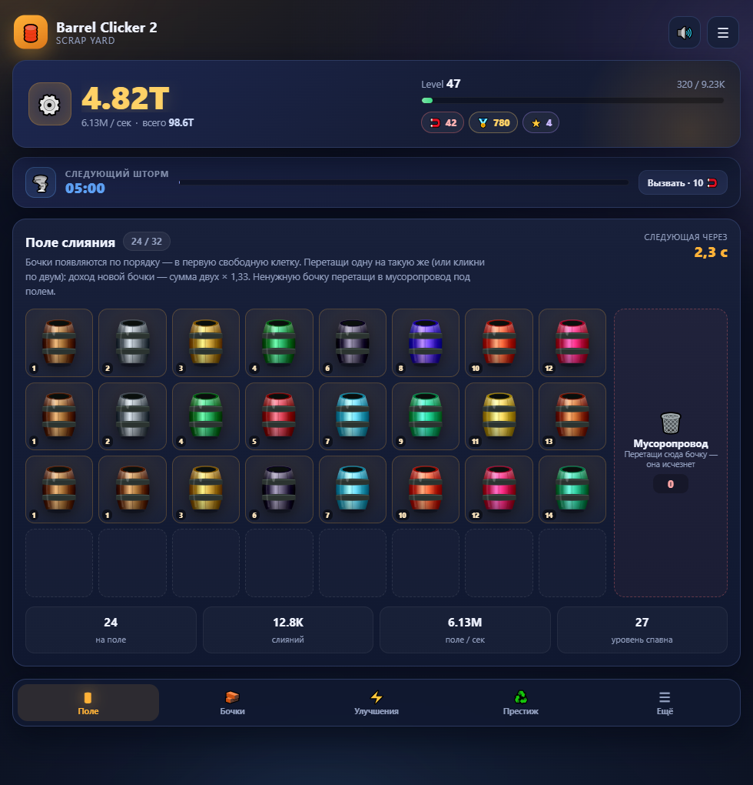
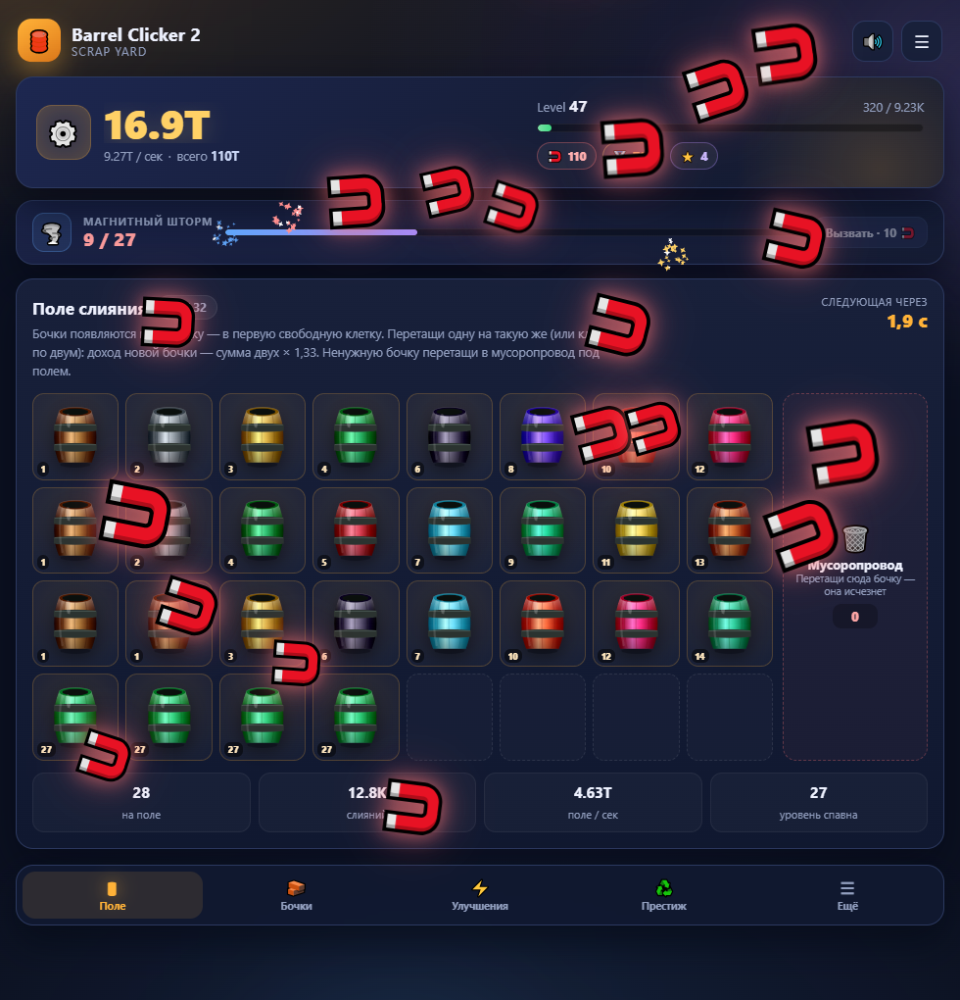
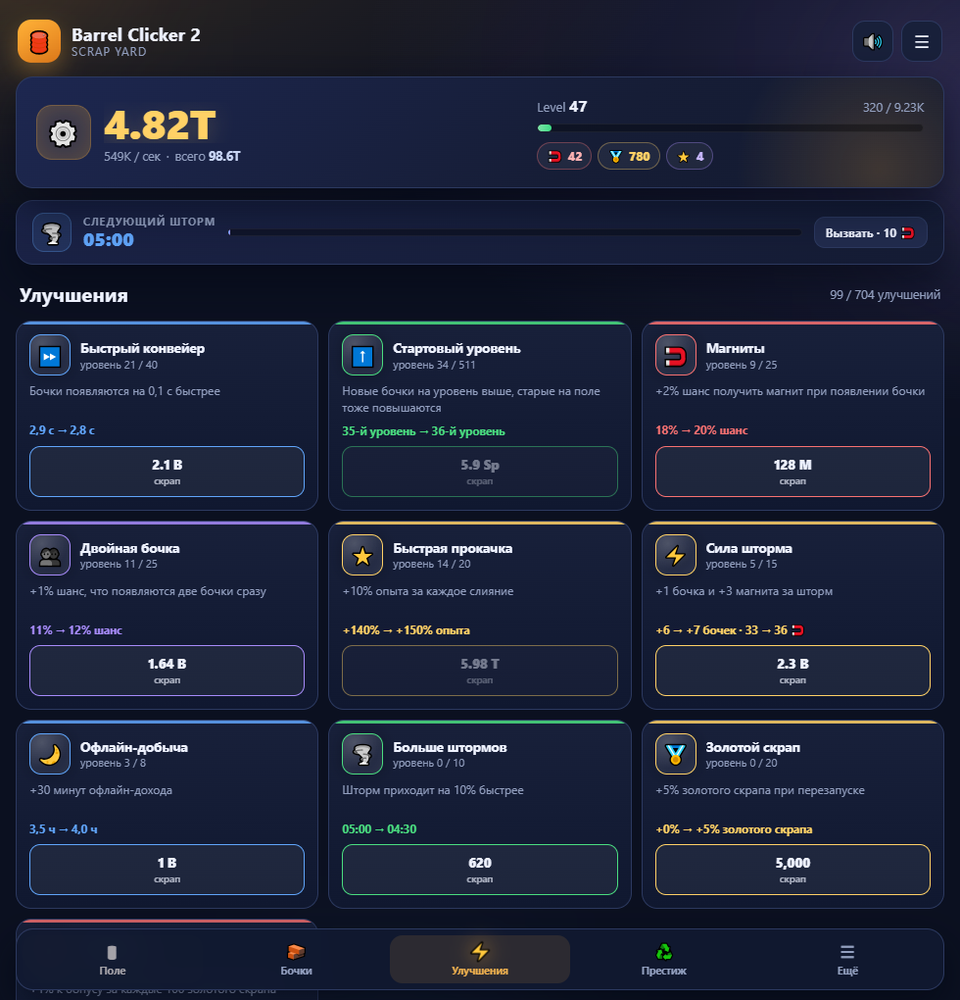
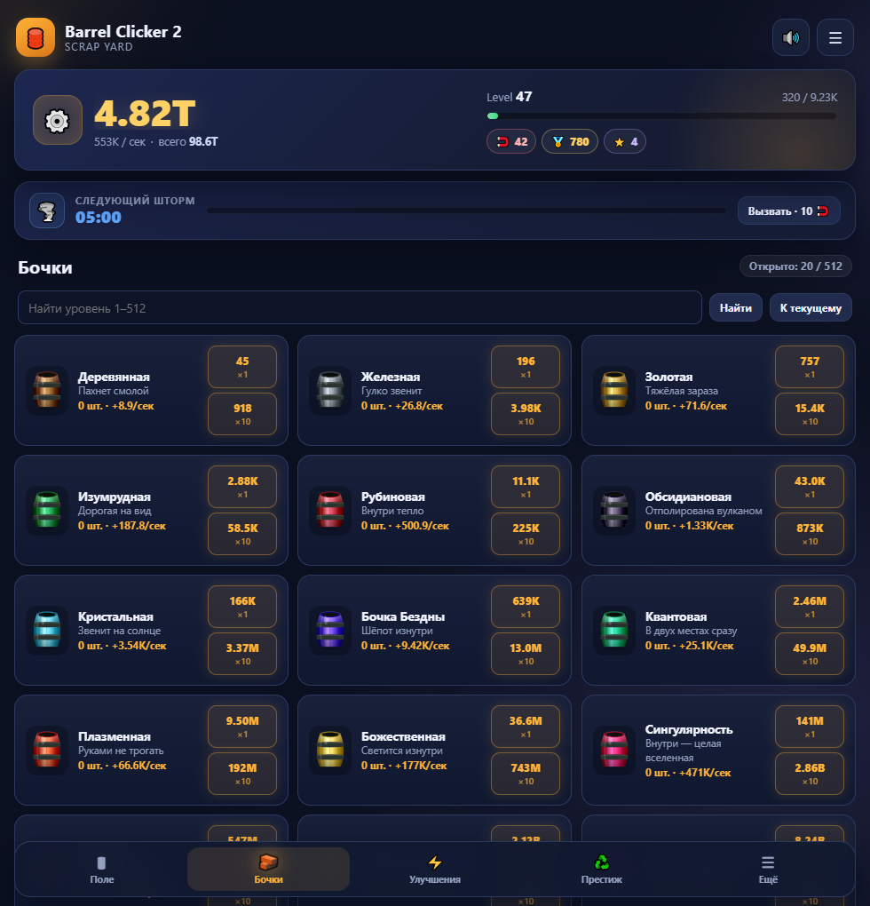
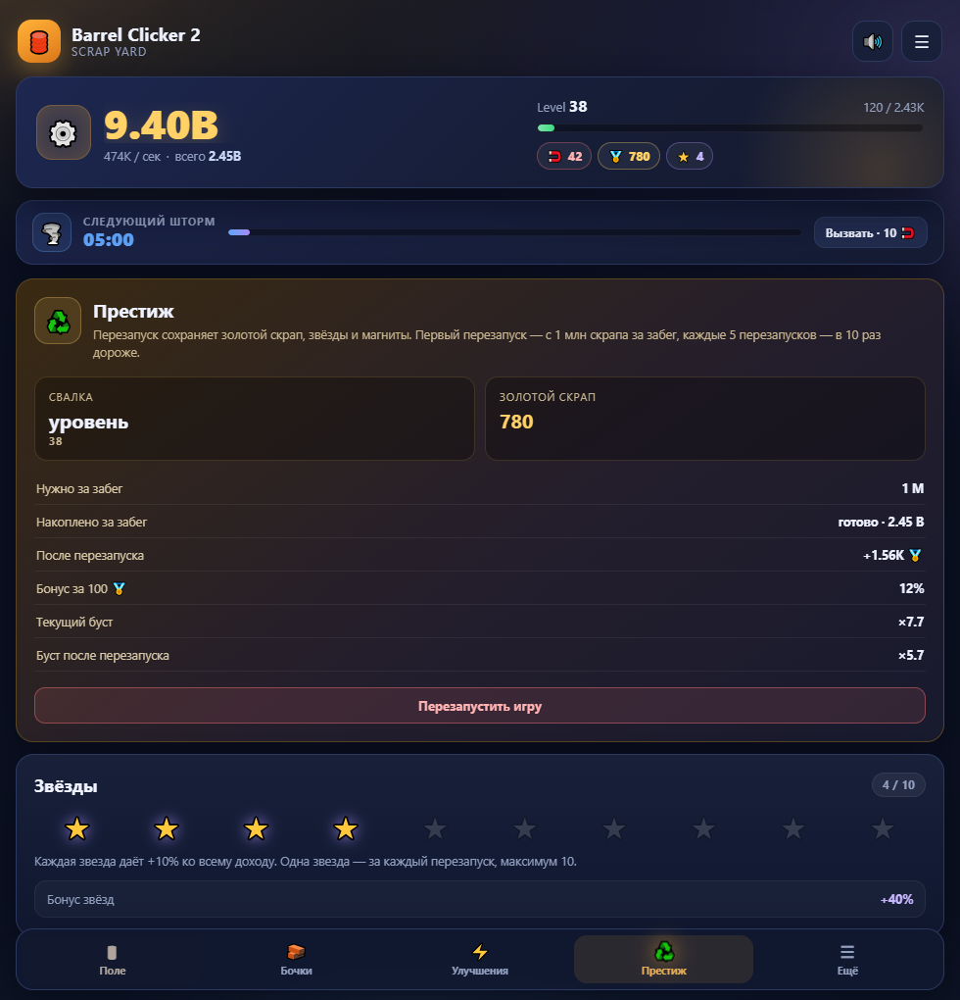

Слияние 8×4
Тащи одинаковые бочки друг на друга или кликни по двум. Новая бочка стоит дороже, чем две старые — доход растёт. А улучшение «Больше — лучше» добавляет на поле до 5 клеток.
Соединяй бочки, собирай скрап и запускай магнитные шторма. 512 уровней, престиж, офлайн-доход — и ни одной подписки.

Простая механика на старте, глубокий прогресс дальше. Каждая покупка заметна, каждое слияние приятно.
Тащи одинаковые бочки друг на друга или кликни по двум. Новая бочка стоит дороже, чем две старые — доход растёт. А улучшение «Больше — лучше» добавляет на поле до 5 клеток.
От деревянной до сингулярности: 12 ручных уровней и 500 сгенерированных. 20 рангов, 25 материалов, свой цвет у каждого.
Каждые пять минут сверху падают магниты. Успей поймать — и вызови шторм сам, когда накопишь 10 🧲. А в магнитном магазине 5 постоянных улучшений за 🧲 — от 300 штук.
Перезапусти забег за золотой скрап и получи постоянный множитель. До 10 звёзд, каждая — ещё +10% к доходу.
Зажми кнопку — улучшения покупаются пачкой каждые 0,085 с. Больше не нужно кликать сотню раз подряд.
Ненужную бочку — в утиль одним движением. Поле всегда под контролем, а счётчик выброшенных растёт.
Бочки работают, даже когда игра закрыта. Возвращайся за накопленным скрапом — база 2 часа, улучшения продлевают.
Живой фон, искры при слиянии, конфетти на престиже и синтезированные звуки. Всё можно отключить одной кнопкой.
Тёмный интерфейс, крупные числа и понятные кнопки. Нажми на любой кадр, чтобы открыть его целиком.




Без установщика, без регистрации, без .NET и лишних скачиваний.
Нажми «Скачать для Windows». Один файл весом 67,1 МБ — внутри уже всё, что нужно.
Двойной клик по BarrelClicker.exe. Установка не нужна. Если появится SmartScreen — «Подробнее» → «Выполнить в любом случае».
Бочки появляются сами. Соединяй одинаковые, покупай улучшения и не забывай ловить магниты.
Файл не подписан платным цифровым сертификатом, поэтому SmartScreen перестраховывается. Игра работает полностью локально: не отправляет данные и не требует интернет. Нажми «Подробнее» → «Выполнить в любом случае».
Использует WebView2 — он уже есть в Windows 10/11 вместе с Edge.
Открой игру в браузере телефона и добавь её на домашний экран. Она запустится как обычное приложение — без магазина, установщика и рекламы.
Один файл — и вся свалка твоя. Бесплатно, без рекламы, регистрации и подписок.
Нажимаешь — и файл уже качается. Установка не нужна.
F1BB78C6AECC21FD072C9CD65021CB416DC887C1EE52BC3B1D3BB60CB1FDAC34
BarrelClicker.exe — самодостаточный файл: внутри уже есть .NET-рантайм и сама игра. Просто запусти его.%LOCALAPPDATA%\BarrelClicker\profile\. Сохранение происходит автоматически. Если удалить эту папку, игра начнётся заново.Esc — закрыть · ← → — листать